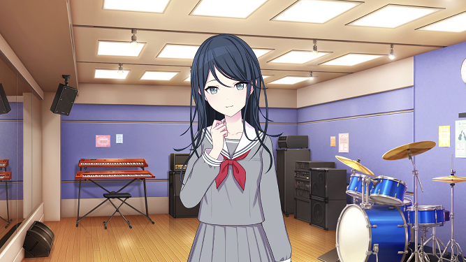
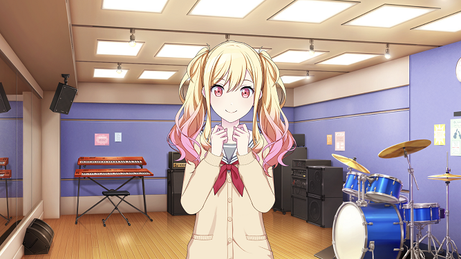
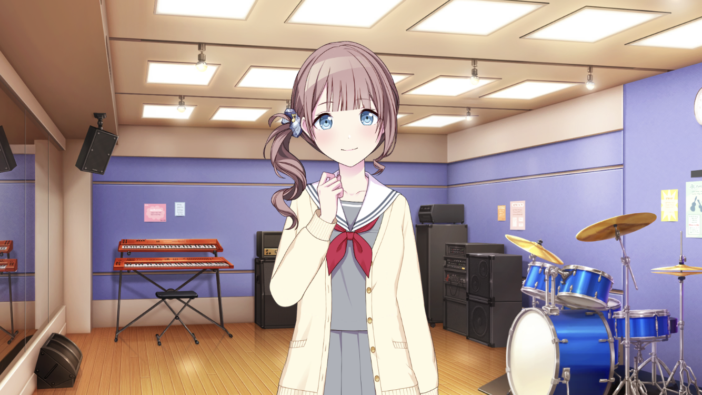
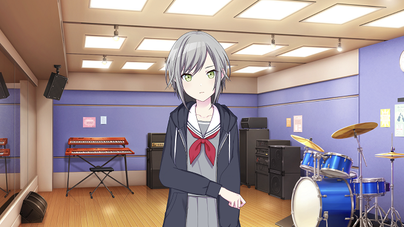
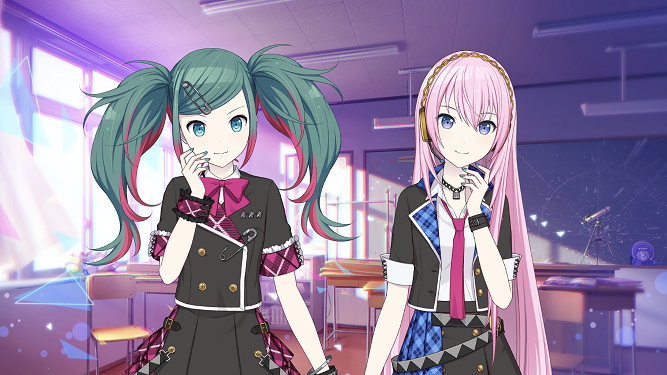
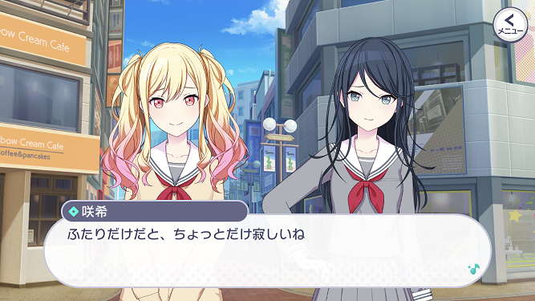
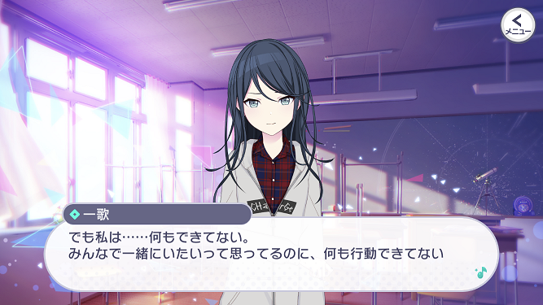
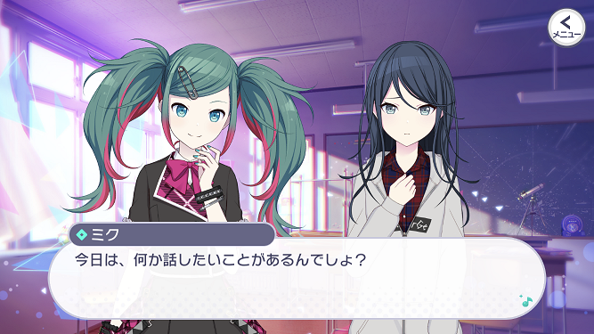
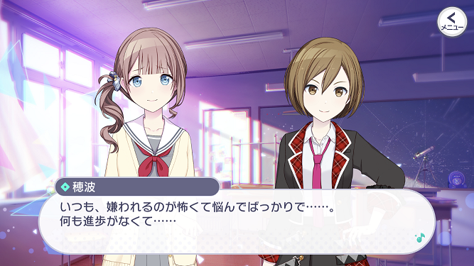
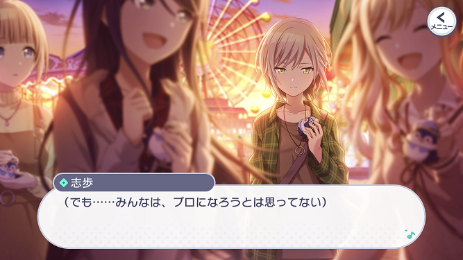

星乃 一歌 (ほしの いちか)
クールに見えて、本当は友人想いの優しい少女。
咲希、穂波、志歩とは幼馴染みだが、ある事情から穂波と志歩とは関係がぎくしゃくしている。
ミクの歌を聴くことが好き。
Leo/needではギターとボーカル担当。
(公式紹介文より)
Leo/need
教室のセカイ
Leo/need(略称: レオニ)は、幼馴染み4人で結成されたガールズバンドユニットです。


天馬 咲希 (てんま さき)
いつも明るく、笑顔を絶やさないムードメーカー。
生まれつき病弱だったせいで中学校はなかなか通えなかったが、ようやく元気になり、高校から復学する。
久しぶりに再会できる幼馴染みたちとの楽しい高校生活を期待していたが……。
Leo/needではキーボード担当。
(公式紹介文より)
いつも明るく、笑顔を絶やさないムードメーカー。
生まれつき病弱だったせいで中学校はなかなか通えなかったが、ようやく元気になり、高校から復学する。
久しぶりに再会できる幼馴染みたちとの楽しい高校生活を期待していたが……。
Leo/needではキーボード担当。
(公式紹介文より)

望月 穂波 (もちづき ほなみ)
文武両道の優等生で、包み込むような優しさを持つ。
一歌、咲希、志歩とは幼馴染みだったが、中学時代のあることがきっかけで一歌たちとは距離を置くようになってしまう。
Leo/needではドラム担当。
(公式紹介文より)
文武両道の優等生で、包み込むような優しさを持つ。
一歌、咲希、志歩とは幼馴染みだったが、中学時代のあることがきっかけで一歌たちとは距離を置くようになってしまう。
Leo/needではドラム担当。
(公式紹介文より)

日野森 志歩 (ひのもり しほ)
馴れ合いを嫌う一匹狼。
自分の好きなことに没頭し、周囲の人間にどう思われようが気にしない。
そんな彼女も、かつては幼馴染みたちと行動を共にしており、友人たちのことも大切に思っていたのだが……。
Leo/needではベース担当。
(公式紹介文より)
馴れ合いを嫌う一匹狼。
自分の好きなことに没頭し、周囲の人間にどう思われようが気にしない。
そんな彼女も、かつては幼馴染みたちと行動を共にしており、友人たちのことも大切に思っていたのだが……。
Leo/needではベース担当。
(公式紹介文より)
バーチャル・シンガー

初音ミク、巡音ルカ
ミクとルカがセカイの教室で4人を待っている。
4人が本当の想いに気づけるように想いを受け止め、背中を押してくれる。
(公式紹介文より)
ミクとルカがセカイの教室で4人を待っている。
4人が本当の想いに気づけるように想いを受け止め、背中を押してくれる。
(公式紹介文より)
メインストーリーのあらすじは公式動画があるのでそちらを確認してみてください。
なお、この動画のBGMは needLe です。
(公式の紹介文)
様々な事情からすれ違い、幼馴染みと疎遠になってしまった星乃一歌。
しかし、幼馴染みのひとりで療養をしていた、天馬咲希が学校に戻ってきたことをきっかけに、 遠ざかっていた4人の距離に変化が表れ始める。
なお、この動画のBGMは needLe です。
(公式の紹介文)
様々な事情からすれ違い、幼馴染みと疎遠になってしまった星乃一歌。
しかし、幼馴染みのひとりで療養をしていた、天馬咲希が学校に戻ってきたことをきっかけに、 遠ざかっていた4人の距離に変化が表れ始める。
①4人はなぜバラバラになったのか

②咲希の優しさと焦り

③頼れる存在になりたいミク

メインストーリー後の展開
クリックして開く(※ネタバレ含む)
④穂波の勇気

人から嫌われることを恐れる穂波は、合唱祭の話し合いでクラスメイトが対立することに苦悩します。
彼女がこの対立とどう向き合い解決していくか、そして彼女の想いがどう成長するかに注目です。
彼女がこの対立とどう向き合い解決していくか、そして彼女の想いがどう成長するかに注目です。
⑤志歩の揺れる思い

志歩は「プロになりたい」という想いを持ってバンド練習をしていますが、他のメンバーはプロを目指すわけでもなく「4人で一緒に過ごしたい」という想いからバンドをしています。
そんな中、志歩はプロのバンドからスカウトを受けます。
今後の彼女たちは違う道を歩むのか、それとも同じ道に進むのかという点がストーリーのカギになりそうです。
そんな中、志歩はプロのバンドからスカウトを受けます。
今後の彼女たちは違う道を歩むのか、それとも同じ道に進むのかという点がストーリーのカギになりそうです。
カバー楽曲
レオニのカバー楽曲には、いわゆる青春を感じやすいもの－爽やかさや若い力強さが含まれるものが多いです。
特に3DMVでは必ず教室に全員揃って演奏をしている点が特徴的です。
「4人(+ミク)で一緒にいること」を一番大切にするレオニらしさが表れています。
特に3DMVでは必ず教室に全員揃って演奏をしている点が特徴的です。
「4人(+ミク)で一緒にいること」を一番大切にするレオニらしさが表れています。
また、2DMVでは